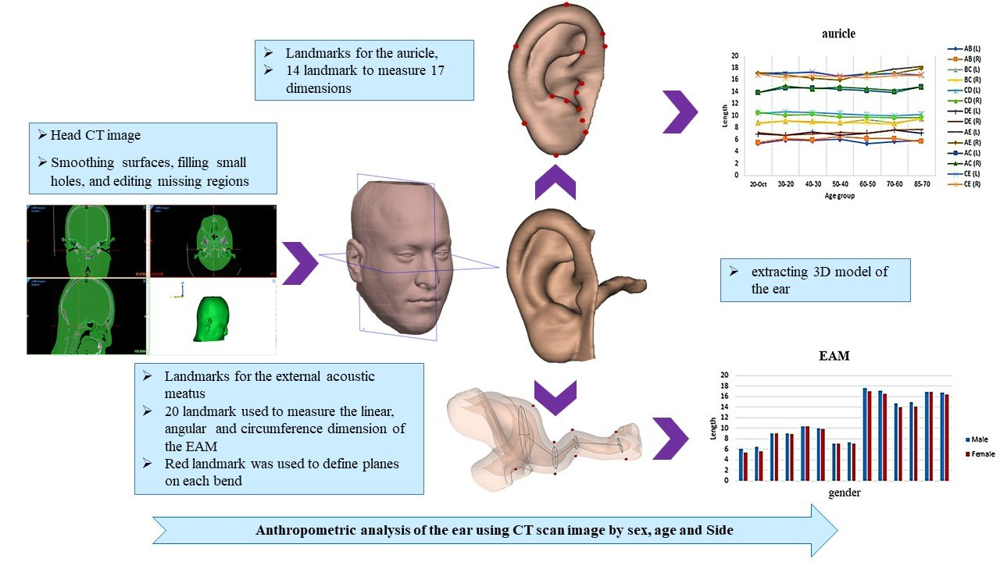

MSc Project in Ergonomics · Co-supervision · CT Imaging · 3D Modelling
Anthropometric Analysis of the Ear Using CT Images
Affiliation: MSc dissertation in ergonomics (project management and student mentorship)
A source of ear size and shape data, with linear, angular and circumference dimensions, to support the ergonomic design of ear-related products. I managed the project and mentored the MSc student.
AnthropometryCT imaging3D reconstructionProduct ergonomicsMentorship
Project overview
Ear-related products need to fit the human ear. This study measured 38 variables from the auricle to the tympanic membrane in the Iranian population using 210 head CT images (ages 10–85).
The ear was reconstructed in 3D from CT images, landmarks were placed on the auricle and external acoustic meatus, and dimensions were compared by age group, gender and side.
My contribution
- Managed the project and mentored the MSc student.
- Guided the measurement methodology and analysis.
Method
- 210 head CT images, ages 10–85
- 3D model extraction of the ear
- Landmarks on the auricle and external acoustic meatus
- 38 linear, angular and circumference measurements
Results
- Significant differences in ear dimensions were found between age groups.
- On average, males had larger ear dimensions than females.

Tools and methods
CT image processing3D modellingLandmarkingStatistical analysisStudent mentorship
Related publications & IP
- M. Nasiri, H. Khabiri, G.H. Halvani, M. MoradiAmin, F. Shamsi, Z. ZangiAbadi. Ergonomics in Design, 33(2), 89–106, 2025.